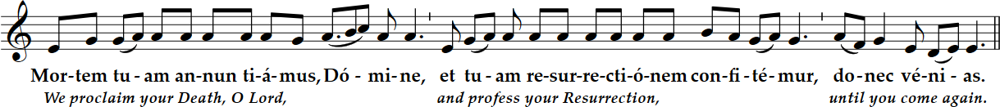
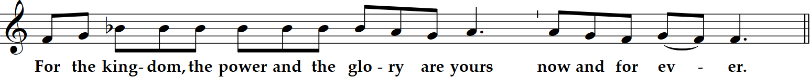

Twenty-fifth Sunday in Ordinary Time
6 PM Mass
Prelude “Andante in F” Edward MacDowell (1860-1908)
Twenty-fifth Sunday in Ordinary Time
6 PM Mass
Prelude “Andante in F” Edward MacDowell (1860-1908)
I am the salvation of the people,
says the Lord;
from whatever tribulations
they cry out to me,
I will give heed to them;
and I will be their Lord for ever.

I confess to almighty God and to you, my brothers and sisters, that I have greatly sinned,
in my thoughts and in my words, in what I have done and in what I have failed to do,
through my fault, through my fault, through my most grievous fault;
therefore I ask blessed Mary ever-Virgin, all the Angels and Saints, and you, my brothers and sisters, to pray for me to the Lord our God.

Seek the LORD while he may be found,
call him while he is near.
Let the scoundrel forsake his way,
and the wicked his thoughts;
let him turn to the LORD for mercy;
to our God, who is generous in forgiving.
For my thoughts are not your thoughts,
nor are your ways my ways, says the LORD.
As high as the heavens are above the earth,
so high are my ways above your ways
and my thoughts above your thoughts.
Brothers and sisters:
Christ will be magnified in my body, whether by life or by death.
For to me life is Christ, and death is gain.
If I go on living in the flesh,
that means fruitful labor for me.
And I do not know which I shall choose.
I am caught between the two.
I long to depart this life and be with Christ,
for that is far better.
Yet that I remain in the flesh
is more necessary for your benefit.
Only, conduct yourselves in a way worthy of the gospel of Christ.
Jesus told his disciples this parable:
"The kingdom of heaven is like a landowner
who went out at dawn to hire laborers for his vineyard.
After agreeing with them for the usual daily wage,
he sent them into his vineyard.
Going out about nine o'clock,
the landowner saw others standing idle in the marketplace,
and he said to them, 'You too go into my vineyard,
and I will give you what is just.'
So they went off.
And he went out again around noon,
and around three o'clock, and did likewise.
Going out about five o'clock,
the landowner found others standing around, and said to them,
'Why do you stand here idle all day?'
They answered, 'Because no one has hired us.'
He said to them, 'You too go into my vineyard.'
When it was evening the owner of the vineyard said to his foreman,
'Summon the laborers and give them their pay,
beginning with the last and ending with the first.'
When those who had started about five o'clock came,
each received the usual daily wage.
So when the first came, they thought that they would receive more,
but each of them also got the usual wage.
And on receiving it they grumbled against the landowner, saying,
'These last ones worked only one hour,
and you have made them equal to us,
who bore the day's burden and the heat.'
He said to one of them in reply,
'My friend, I am not cheating you.
Did you not agree with me for the usual daily wage?
Take what is yours and go.
What if I wish to give this last one the same as you?
Or am I not free to do as I wish with my own money?
Are you envious because I am generous?'
Thus, the last will be first, and the first will be last."
Homily + Profession of Faith
I believe in one God, the Father almighty,
maker of heaven and earth,
of all things visible and invisible.
I believe in one Lord Jesus Christ,
the Only Begotten Son of God,
born of the Father before all ages.
God from God, Light from Light, true God from true God,
begotten, not made, consubstantial with the Father;
through him all things were made.
For us men and for our salvation he came down from heaven,
and by the Holy Spirit was incarnate of the Virgin Mary,
and became man.
For our sake he was crucified under Pontius Pilate,
he suffered death and was buried,
and rose again on the third day
in accordance with the Scriptures.
He ascended into heaven
and is seated at the right hand of the Father.
He will come again in glory to judge the living and the dead
and his kingdom will have no end.
I believe in the Holy Spirit, the Lord, the giver of life,
who proceeds from the Father and the Son,
who with the Father and the Son is adored and glorified,
who has spoken through the prophets.
I believe in one, holy, catholic and apostolic Church.
I confess one Baptism for the forgiveness of sins
and I look forward to the resurrection of the dead
and the life of the world to come. Amen.
Prayer of the Faithful + Offertory + Liturgy of the Eucharist
“Though I walk amid distress, you preserve me; against the anger of my enemies you raise your hand;
your right hand saves me.”
May the Lord accept the sacrifice at your hands,
for the praise and glory of his name, for our good, and the good of all his holy Church.



Deliver us Lord from every evil, graciously grant peace in our day, that by the help of your mercy we may be always free from sin
and safe from all distress, as we await the blessed hope, and the coming of our Savior, Jesus Christ.

Lord, I am not worthy that you should enter under my roof, but only say the word and my soul shall be healed.

1. Blessed those
whose way is blameless,
who walk by the law
of the LORD.
---
2. Blessed those
who keep his testimonies,
who seek him
with all their heart.
---
3. Then I will
not be ashamed
to ponder
all your commandments.
---
4. I will praise you
with sincere heart
as I study
your righteous judgments.

Queen, mother of mercy: our life, sweetness, and hope, hail. To thee do we cry, poor banished children of Eve.
To you we sigh, mourning and weeping in this va ley of tears.
Turn then, our advocate, those merciful eyes toward us. And Jesus, the blessed fruit of thy womb, after our exile, show us.
O clement, O loving, O sweet Virgin Mary
"St. Michael the Archangel, defend us in battle. Be our protection against the wickedness and snares of the devil.
May God rebuke him, we humbly pray; and do thou, O Prince of the heavenly hosts, by the power of God,
cast into hell Satan and all the evil spirits who prowl about the world seeking the ruin of souls. Amen."

Postlude - “Toccata in G Major” BWV 916 J.S. Bach (1685-1750)